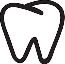
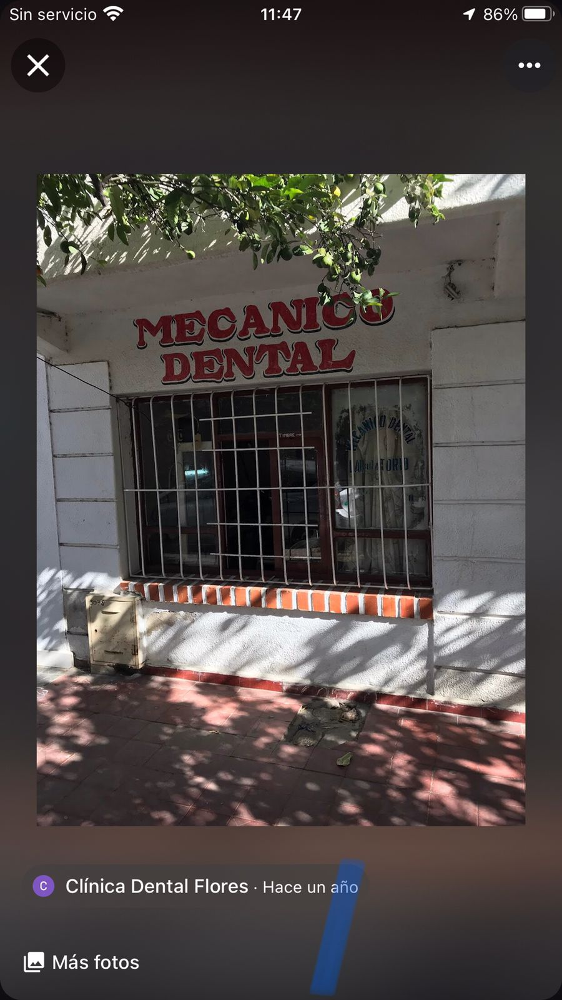
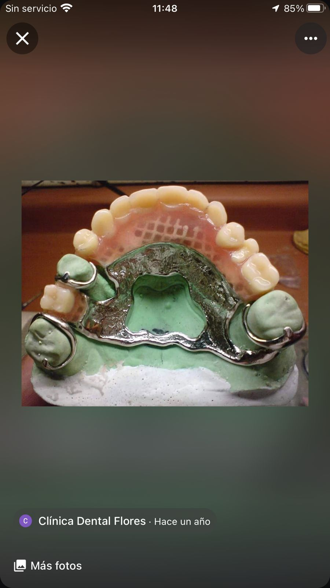
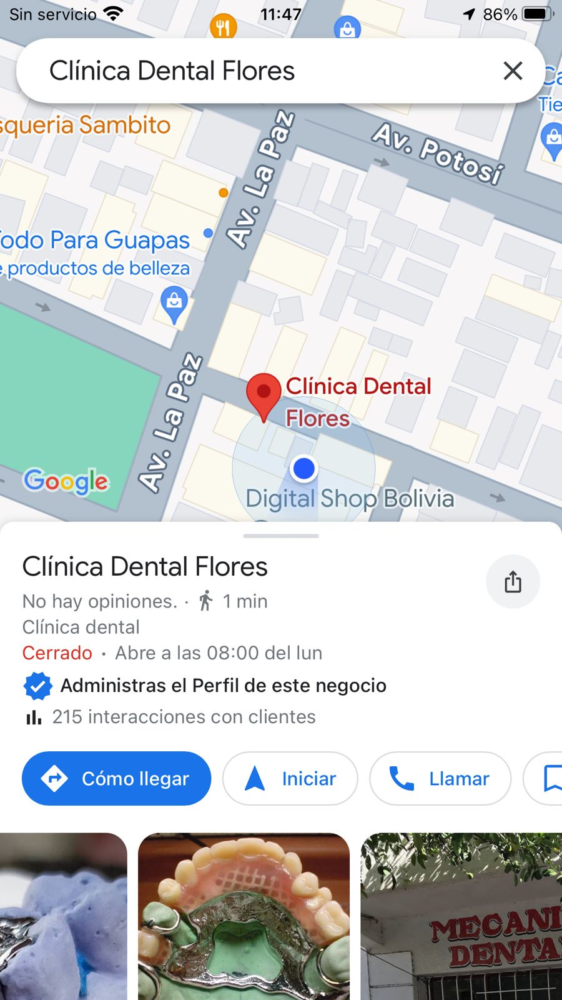

Name: Luis Gerardo Flores Condori
Purpose
Why does my business exist, in other words, what mission is my business attempting to accomplish?
R.- I have a Dental Laboratory, I am preparing to be a dentist, my goal is to provide good care to people and generate good resources for my family, I want to retain clients.
Approach
How is my business different, in other words, what makes my service or product better or unique?
R.- What makes my business unique is that something familiar is that my grandfather started this work and little by little we improved it, we also work with the best materials and we are prepared and very well trained to perform any type of dental work.
Customer
Who is my customer?
R.- They are all people who need dental treatment but especially people over 50 years old, because we make dentures.
This criterion is linked to a Learning OutcomeValues
What words or phrases best describe my business and its culture?
R.- I think the word that best describes my business is passion because we love what we do and we do our best to make our work the best.


